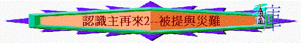
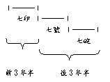

|
主 再 來 |
||
| 預 兆 與 危 機 | 被 提 與 災 難 | 國 度 與 永 恆 |
引言：主再來時，教會會如何？教會否經歷「七年大災難」？為何要有如此慘痛的「災難」？
二.被提
1.被提
A.被提與教會
「
使眾人都明白，這歷代以來隱藏在創造萬物之神裡的奧秘是如何安排的，為要藉著教會使天上執政的、掌權的，現在得知神百般的智慧。」弗3:9-10
「以後我們這活著還存留的人必和他們一同被提到雲裡，在空中與主相遇。這樣，我們就要和主永遠同在。」帖前4:17
〜在舊約中，很少題及有關「被提」的事情，舊約選民一直觀念彌賽亞會臨在地上，但他們沒想像等候的主會提一些人到雲中，因為「被提」的事似乎是指教會(由相信主的猶太人及外邦人組成)有關，而少涉及以色列的國度，而教會在舊約中是隱藏的奧秘，所以到新約才將此奧秘顯明。
B.被提的景象
a.基督降臨
「因為主必親自從天降臨，有呼叫的聲音和天使長的聲音，又有神的號吹響；那在基督裡死了的人必先復活。」帖前4:16
〜主親自從天降臨，是實在的降臨，不是指降臨在人心中，而此「降臨」重點不是在地上行審判，而是從屬天空間進入屬地的天上，在雲上，重點是提接教會，到提接後災難的出現，祂會再臨到地上施行審判。
b.天上聲音
(1)有呼叫的聲音
(2)天使長的聲音
(3)神的號吹響
〜從天而來有呼叫的聲音出現，彷彿天上要報告一件重要事情發生，而且此重要情度更要由天使中的首領----天使長親自發出，要傳遞一件非凡的事，而「號」在舊約中有召集或提醒作用，天上的號響起，彷彿召集信徒來到主前或提醒教會主已在雲中了！
c.信徒復活
(1)睡了的信徒
「我們若信耶穌死而復活了，那已經在耶穌裡睡了的人，神也必將他與耶穌一同帶來。」帖前4:14
「耶穌對他說：「我實在告訴你，今日你要同我在樂園裡了。」」路23:43
〜在主裏死了的信徒是睡了，指他們的肉身死了，靈魂去到一個安息的地方叫「樂園」，死了後是即是與主同在在樂園裏的，靈魂不是睡了，身體卻已死，仍沒有改變。
(2)復活的身子
「因為主必親自從天降臨，有呼叫的聲音和天使長的聲音，又有神的號吹響；那在基督裡死了的人必先復活。」帖前4:16
「或有人問：「死人怎樣復活，帶著什麼身體來呢？」」林前15:35
「但神隨自己的意思給他一個形體，並叫各等子粒各有自己的形體。凡肉體各有不同：人是一樣，獸又是一樣，鳥又是一樣，魚又是一樣。有天上的形體，也有地上的形體；但天上形體的榮光是一樣，地上形體的榮光又是一樣。日有日的榮光，月有月的榮光，星有星的榮光；這星和那星的榮光也有分別。死人復活也是這樣：所種的是必朽壞的，復活的是不朽壞的；所種的是羞辱的，復活的是榮耀的；所種的是軟弱的，復活的是強壯的；所種的是血氣的身體，復活的是靈性的身體。若有血氣的身體，也必有靈性的身體。」林前15:38-44
〜主再來時，在新約在主裏死了的人(舊約的聖徒仍未復活，要在災難期後才復活)將復活，此復活不是指在墳墓裏身體再重生，復回原有的模式，而是指身體的改變，此身體已不是地上的身體，而是：
(A)天上的形體
(B)獨特的榮光
(C)不朽壞身子
(D)靈性的身體(不屬血氣)
〜此身子是神隨自己意思改變的，由之前已死的狀態，再得著改變，如復活過來！
d.教會被提
「我如今把一件奧秘的事告訴你們：我們不是都要睡覺，乃是都要改變，就在一霎時，眨眼之間，號筒末次吹響的時候。因號筒要響，死人要復活成為不朽壞的，我們也要改變。」林前15:51-52
「以後我們這活著還存留的人必和他們一同被提到雲裡，在空中與主相遇。這樣，我們就要和主永遠同在。」帖前4:17
(1)在樂園中被提到雲裏
〜在之前已死的信徒，他們的靈魂會得著一個改變了的身子，會被提到雲裏。
(2)在地上中被提到主裏
〜而地上活著的人不是先死去而復活，而是未經死亡，身體會有改變，此改變的身子與之前死去的信徒有復活的身子改變一樣。
〜在世或之前教會一切信徒會一同被提在雲中
e.來到神前
「好使你們當我們主耶穌同他眾聖徒來的時候，在我們父神面前，心裡堅固，成為聖潔，無可責備。」帖前3:13
〜教會與主將會來到父神面前
f.永遠同在
〜我們會與主永遠同在
C.被提的時間
a.一剎那的改變
「就在一霎時，眨眼之間，號筒末次吹響的時候。因號筒要響，死人要復活成為不朽壞的，我們也要改變。」林前15:52
〜此復活與改變是在一剎那之間，也是在人說平安穩妥的時候發生。
b.災難前的出現
〜教會被提是在災難前，災難中間或是災難後發生，筆者認為應是在「大災難」前發生，原因如下：
|
內容 |
信徒得在七年大災難前被提，不經大災難的。 |
|
圖解 |
|
|
論証 |
|
|
1.
帖前5:3,
太24:8, 可13:8明載大災難”忽然”臨到，但信徒們卻不在黑暗裡，神不預定他們受刑，所以明顯他們是免去大災難，以致得救。 |
|
|
2.
帖前5:3指「他們」不能逃避災難，但到v.4卻改用「你們」，明顯v.3,
v.4有分別，「你們」是指信的對象—信徒。而v4b說「卻不在黑暗裡」。之前「他們」不能逃災難，現說「你們」不在黑暗裡，明顯是一個分別，不同的比較，信徒是(你們)不像「他們」，世界的人一樣，受災難的。 |
|
|
3.
啟3:10說「我必在普天下受試煉的時候，保守你免去你的試煉」，普天下之試煉在幾時，明顯是指啟所記載全球性的災難，而真正信徒卻可免受災難。 |
|
|
4.
帖前4:13-18先說教會被提，5章再說災難來臨，所以聖經的次序是先被提，災難被提，災難才來。 |
|
|
5.
啟1-3中均清楚有「教會」情況，但4-19卻沒提了，因為敬拜轉到天上，地上完全沒敬拜活動，而啟6-19只出現144,000以色列人，若教會仍存地上，祂不可能剩下那麼少信徒，而啟20-22教會再重現，6-19的大災難，明顯教會已被提了；而且如教會被提是大災難後發生的，為何啟示錄沒記載呢？ |
|
|
6.
林前15:23-24顯示三種復活，第一是基督復活，「以後」是屬主的人，「再後」末期到了，有另一次未信者的復活，所以在末期到了前，(否則不會用「再後」末期到了)，信主之人已復活了，而且是(v.24)指主返來，將執政毀滅，明顯要消滅敵神之勢力，所以末期應是大災難末期，因此時有執政的，但終被主消滅，所以末期前應是災難前了。 |
|
|
7.
大災難的目的審判地上的人(啟6:10，11:10，13:8,12,14，14:6，17:8)，預備以色列人迎見她的王。這都不屬教會，災難似乎對教會毫無意義，教會也不用在災中。 |
|
|
8.
路21:34-36的那日是忽然臨到，並帶有困苦，所以應指大災難，但信徒竟可以祈求，能逃避這一切要來的事，得以站在人子面前，所以能逃避。能「站在人子面前」，不是指被提見主，又指什麼？ |
|
D.被提的意義
a.我們得指望
「論到睡了的人，我們不願意弟兄們不知道，恐怕你們憂傷，像那些沒有指望的人一樣。」帖前4:13-14
〜被提包含了改變與復活的事，若信徒知道將來必有被提的事，對於離去在主裏的家人與肢體，他們會感到不絕望，因死了的人只是睡著，有一日會改變。
〜而信徒在世雖經勞若或逼迫，但我們有一日會被提見主的，是我們所盼望的日子！
b.教會免受刑
「人正說「平安穩妥」的時候，災禍忽然臨到他們，如同產難臨到懷胎的婦人一樣。他們絕不能逃脫。弟兄們，你們卻不在黑暗裡，叫那日子臨到你們像賊一樣。」帖前5:3-4
「你既遵守我忍耐的道，我必在普天下人受試煉的時候，保守你免去你的試煉。我必快來，你要持守你所有的，免得人奪去你的冠冕。」啟3:10-11
c.信徒要儆醒
「好使你們當我們主耶穌同他眾聖徒來的時候，在我們父神面前，心裡堅固，成為聖潔，無可責備。」帖前3:13
「因為睡了的人是在夜間睡，醉了的人是在夜間醉。但我們既然屬乎白晝，就應當謹守，把信和愛當作護心鏡遮胸，把得救的盼望當作頭盔戴上。」帖前5:7-8
〜我們要被提來到父神面前，要交賬的，所以我們更要儆醒！
2.災難
〜教會被提後，大災難也會臨在地上！
A.災難的形容
a.「大艱難」
「「那時，保佑你本國之民的天使長（原文作大君）米迦勒必站起來，並且有大艱難，從有國以來直到此時，沒有這樣的。你本國的民中，凡名錄在冊上的，必得拯救。」但12:1
b.「大災難」
「因為那時必有大災難，從世界的起頭直到如今，沒有這樣的災難，後來也必沒有。若不減少那日子，凡有血氣的總沒有一個得救的；只是為選民，那日子必減少了。」太24:21-22
c.「忿怒的大日到了」
「地上的君王、臣宰、將軍、富戶、壯士，和一切為奴的、自主的，都藏在山洞和巖石穴裡，向山和巖石說：「倒在我們身上吧！把我們藏起來，躲避坐寶座者的面目和羔羊的忿怒；因為他們忿怒的大日到了，誰能站得住呢？」」啟6:15-17
〜這些字眼都形容災難的恐怖及無人能站立得住！
B.災難的原因
a.為選民而設—除淨罪惡
「「為你本國之民和你聖城，已經定了七十個七。要止住罪過，除淨罪惡，贖盡罪孽，引進（或作：彰顯）永義，封住異象和預言，並膏至聖者（者：或作所）。」但9:24
「若不減少那日子，凡有血氣的總沒有一個得救的；只是為選民，那日子必減少了。」太24:22
「弟兄們，我不願意你們不知道這奧秘（恐怕你們自以為聰明），就是以色列人有幾分是硬心的，等到外邦人的數目添滿了，於是以色列全家都要得救。如經上所記：必有一位救主從錫安出來，要消除雅各家的一切罪惡；又說：我除去他們罪的時候，這就是我與他們所立的約。」羅11:25-27
〜末後的災難是為以色列民而設的，他們在末時有很多人仍得罪神，仍未悔改歸向基督，所以神藉此災難煉淨他們，叫他們最終見到神公義的作為時，全家求告神，以至罪得赦，全家得救，引進永義。
b.為世人而立----傾盡忿怒
「外邦發怒，你的忿怒也臨到了；審判死人的時候也到了。你的僕人眾先知和眾聖徒，凡敬畏你名的人，連大帶小得賞賜的時候也到了。你敗壞那些敗壞世界之人的時候也就到了。」啟11:18
「這人也必喝神大怒的酒；此酒斟在神忿怒的杯中純一不雜。他要在聖天使和羔羊面前，在火與硫磺之中受痛苦。」啟14:10
「有利劍從他口中出來，可以擊殺列國。他必用鐵杖轄管（轄管：原文作牧）他們，並要踹全能神烈怒的酒醡。」啟19:15
〜地上的人充滿了罪惡，神要在大災難中，向他們傾盡忿怒，審判他們，當然神也渴望他們在警戒中悔改，但可惜他們不悔改。
C.災難的時期
a.七年
「過了六十二個七，那（或作：有）受膏者必被剪除，一無所有；必有一王的民來毀滅這城和聖所，至終必如洪水沖沒。必有爭戰，一直到底，荒涼的事已經定了。一七之內，他必與許多人堅定盟約；一七之半，他必使祭祀與供獻止息。那行毀壞可憎的（或作：使地荒涼的）如飛而來，並且有忿怒傾在那行毀壞的身上（或作：傾在那荒涼之地），直到所定的結局。」但9:26-27
～在但以理書中曾題及過為以色列人有七十個七的計劃，而最後的7年必發生以下的事：
～再從啟示錄看這7年就是今日所講的七年大災難了。從歷史來看，這7年有盟約，有可憎的王及事發生，似乎仍未應驗
b.前3年半與後3年半
*一七之半（3年半），敵神之王與許多人建立盟約，選民、聖殿似乎未受嚴重攻擊。
*一七之半（後3年半），敵神之王行可憎的事，有忿怒傾在他身上
D.災難的內容
〜啟示錄用七印、七號、七碗來形容災難的慘況
a.可怕日子的前奏—七印
「我看見羔羊揭開七印中第一印的時候，就聽見四活物中的一個活物，聲音如雷，說：「你來！」」啟6:1
〜印是用來封住書的，每打開一印，就稍為看到有關災難的內容，而一印比一印更緊張，更凝重，更可怕！
〜而頭6印的災禍在頭3年半發生
〜到揭開第七印，代表災難的內容已打開，就進入了七號及七碗時期，也是後3年半的災難！
(1)天災人禍
「我看見羔羊揭開七印中第一印的時候，就聽見四活物中的一個活物，聲音如雷，說：「你來！」
我就觀看，見有一匹白馬；騎在馬上的，拿著弓，並有冠冕賜給他。他便出來，勝了又要勝。」啟6:1-2
「我聽見在四活物中似乎有聲音說：「一錢銀子買一升麥子，一錢銀子買三升大麥；油和酒不可糟蹋。」」啟6:6
「我就觀看，見有一匹灰色馬；騎在馬上的，名字叫作死，陰府也隨著他；有權柄賜給他們，可以用刀劍、饑荒、瘟疫（或作：死亡）、野獸，殺害地上四分之一的人。」啟6:8
〜有戰爭、飢茺、瘟疫的事情發生，地上四分一人死去！
(2)天地挪移
「天上的星辰墜落於地，如同無花果樹被大風搖動，落下未熟的果子一樣。天就挪移，好像書卷被捲起來；山嶺海島都被挪移離開本位。」啟6:13-14
(3)眾民驚惶
「地上的君王、臣宰、將軍、富戶、壯士，和一切為奴的、自主的，都藏在山洞和巖石穴裡，向山和巖石說：「倒在我們身上吧！把我們藏起來，躲避坐寶座者的面目和羔羊的忿怒；因為他們忿怒的大日到了，誰能站得住呢？」」啟6:15-17
b.漸進災禍催逼----七號
〜當七印打開，引進了七號，而頭6號有漸進程度表達，先是天地，後是人受痛苦，最終很多人死亡。
(1)天地受損
「第一位天使吹號，就有雹子與火攙著血丟在地上；地的三分之一和樹的三分之一被燒了，一切的青草也被燒了。」啟8:7
「海中的活物死了三分之一，船隻也壞了三分之一。」啟8-9
「第四位天使吹號，日頭的三分之一，月亮的三分之一、星辰的三分之一都被擊打，以致日月星的三分之一黑暗了，白晝的三分之一沒有光，黑夜也是這樣。」啟8:12
(2)人類受苦
(A)肉身受苦
「有蝗蟲從煙中出來，飛到地上；有能力賜給他們，好像地上蠍子的能力一樣，並且吩咐他們說，不可傷害地上的草和各樣青物，並一切樹木，惟獨要傷害額上沒有神印記的人。但不許蝗蟲害死他們，只叫他們受痛苦五個月。這痛苦就像蠍子螫人的痛苦一樣。」啟9:3-5
(B)死亡威嚇
「第六位天使吹號，我就聽見有聲音從神面前金壇的四角出來，吩咐那吹號的第六位天使，說：「把那捆綁在伯拉大河的四個使者釋放了。」那四個使者就被釋放；他們原是預備好了，到某年某月某日某時，要殺人的三分之一。馬軍有二萬萬；他們的數目我聽見了。」啟9:13-16
「口中所出來的火與煙並硫磺，這三樣災殺了人的三分之
一。」啟9:18
〜地上有三分之一人死亡
c.傾盡審判的來臨----七碗
〜當第七號吹響後，引進神最後傾盡的分怒性審判，是直接，沒保留的攻擊
(1)難忍的痛苦
「第一位天使便去，把碗倒在地上，就有惡而且毒的瘡生在那些有獸印記、拜獸像的人身上。」啟16:2
「第四位天使把碗倒在日頭上，叫日頭能用火烤人。人被大熱所烤，就褻瀆那有權掌管這些災的神之名，並不悔改將榮耀歸給神。」啟16:8-9
「第五位天使把碗倒在獸的座位上，獸的國就黑暗了。人因疼痛就咬自己的舌頭；又因所受的疼痛，和生的瘡，就褻瀆天上的神，並不悔改所行的。」啟16:10-11
(2)國度的滅亡
「那大城裂為三段，列國的城也都倒塌了；神也想起巴比倫大城來，要把那盛自己烈怒的酒杯遞給他。」啟16:19
「又有第二位天使接著說：「叫萬民喝邪淫、大怒之酒的巴比倫大城傾倒了！傾倒了！」」啟14:8
〜將來有一污穢的國度----巴比倫興起，充滿了偶像，行邪術的人，神要使整個國度傾亡
(3)親自的擊殺
「有無底坑的使者作他們的王，按著希伯來話，名叫亞巴頓，希利尼話，名叫亞玻倫。」啟9:11
「那獸被擒拿；那在獸面前曾行奇事、迷惑受獸印記和拜獸像之人的假先知，也與獸同被擒拿。他們兩個就活活的被扔在燒著硫磺的火湖裡；其餘的被騎白馬者口中出來的劍殺了；飛鳥都吃飽了他們的肉。」啟19:20-21
〜到最後，主要親自回來，親自擊殺敵神的群體
〜所以七印、七號、七碗可形容末後的大而可畏災難

E.敵基督出現
「人不拘用什麼法子，你們總不要被他誘惑；因為那日子以前，必有離道反教的事，並有那大罪人，就是沉淪之子，顯露出來。他是抵擋主，高抬自己，超過一切稱為神的和一切受人敬拜的，甚至坐在神的殿裡，自稱是神。」帖後2:3-4
「智慧人中有些仆倒的，為要熬煉其餘的人，使他們清淨潔白，直到末了；因為到了定期，事就了結。「王必任意而行，自高自大，超過所有的神，又用奇異的話攻擊萬神之神。他必行事亨通，直到主的忿怒完畢，因為所定的事必然成就。」但11:35-36
〜在災難期間，會有一位大罪人，敵擋基督的人物出現，人稱為「敵基督」
a.他是誰？
～不同學者對於那位末世要來的敵基督，有不同看法，但如根據聖經，特別是啟13、17章的描述，敵基督應是：
(1)他是一個獸－－－敵擋基督，想代替基督
～敵基督（antichrist）anti
這個介詞，可以譯為敵對（against）或代表，代替（in place of）基督，而啟13、17都同樣講一個有七頭十角的獸，會在災難中出現，如從獸的特質、形容、工作，13與17章所描述的獸應是指同一個人物（or
一件事），彼此都是七頭、十角，都是褻瀆神，有權的，而更重要兩者都是形容今日神學界所講的「敵基督」。
～因為此七頭十角的獸是敵擋基督的，向神說褻瀆的話（13：6），逼迫在基督裏的聖徒（13：7），並與羔羊爭戰（19：9），所以此獸明顯出來是為敵擋主的，而且此獸更是想代替基督的，想模仿基督。
～因此敵基督就是13、17章所講的那七頭十角的獸了！
(2)他是第七個頭───曾受傷郤被醫好的王
～敵基督是那獸，但獸又指什麼？是一個獸或是代表一個人呢？從那七頭中描述，或許被我們更加瞭解。啟13，形容那獸有七頭，啟17：9-13，解釋七頭是七個王，而第七個王卻是似乎受了死傷卻被醫好，而13：12、14都說獸受刀傷，並醫好，似乎那第七個王是指向敵基督，那獸，加上原文「似乎受了死傷」和5：6之羔羊「像是被殺過一樣」，似乎此第七個王像基督死了又復活，若不是魔鬼給敵基督死過復活，要仿效基督，迷惑眾人，又那個地上的王會復活呢？所以敵基督，那獸大可能是指向一個王，那現今沒有來，將來在末世中必出現，而且會死過而復活的（啟17：10）。
(3)他也是第八位───末世的世界之王
～啟17：11亦指明此獸是第八位的王。「他也和那七位同列」英文是「and
is of the seven」也是屬於那七位，即是第八位王了，而（啟17：9－13）描述七頭又是指向七座山，而古時羅馬作家往往以「七座山」代表羅馬。羅馬所流治的版圖正好是今日歐洲，所以第七位王，可能是繼前六位過去後，成為歐洲的王，死後再復活，但為何亦是第八位，同指是敵基督呢？因為聖經啟17：12－13描述十角是十王，會將所有權柄歸與那第八位王，好大可能性第七位王，由歐洲被稱王，最後成為十國，世界的盟主，身份的改變，變成了第八位，其實與第七位同列，同是一樣的，所以敵基督不單是死過而活的王，更是將來世界的盟主，世界之王了。
(4)他是從無底坑出來───大罪人，沉淪之子
～啟11：7、17：8都描述此獸是從無底坑上來。無底坑是拘禁邪魔的地方，所以從無底坑上來，從邪惡大本營上來，述有什麼好東西，而事實上，此哭是邪惡的魔鬼代表，牠在背後指使獸，給獸能力，而獸所作的罪惡的事，叫人敬拜自己，敵擋基督，迷感眾人，所以無怪乎帖後2：3用「大罪人」，「沉淪之子」，形容敵基督，的確他所作的是惡行，至終是引向沉淪的，也使人沉淪（啟19：20）。
b.他在何時出現？
「因為那不法的隱意已經發動，只是現在有一個攔阻的，等到那攔阻的被除去，那時這不法的人必顯露出來。主耶穌要用口中的氣滅絕他，用降臨的榮光廢掉他。」帖後
2:7-8
～啟17：10描述那第七位還未來到，要等未時才到，而帖後2：1-10也是提到要等「那捆阻」，（可能是指聖靈或者指教會）除去，他才顯明，而今天教會仍未被提，聖靈仍在地上工作，所以敵基督仍未冒起出來，所以他真是指向那一個人，名叫什麼，我們還未能確定，但所肯定的他是那位在未世中，要敵擋基督，代替基督之世界之王了！
c.他的作為
～從啟13及17章我們看到他有以下不同方面的作為：
(1)對
神───要褻瀆
～啟17：3形容他遍体有褻瀆的名，而13：5、6更形容他會運用權柄，向神說褻瀆的話，誇大的話，要蔑視神，褻瀆那位可畏的神！
(2)對基督───要爭戰
～前文也說過，獸是敵基督的，並且會聯同十王的勢力，一同與羔羊───基督爭戰的（啟17：14），但羔羊才是萬主之主，萬王之王，至終得勝的才是祂！
(3)對聖城───要踐踏
～但8：13、太24：15都分別預言到將來那行毀壞可憎的，那敵基督必踐踏聖城，聖所，並除掉常獻的燔祭，污穢聖殿的！
(4)對聖徒───要迫害
～啟13：7-10「又任憑他與聖徒爭戰，並且得勝．．．．擄掠人的必被擄掠，用刀殺人的，必被刀殺」似乎到災難期間，敵基督會逼迫聖徒，與聖徒爭戰，並且得勝，並在神的容許下，殺了好多聖徒！
(5)對世界───要作王
～啟17：1－13，指出那第八位的必作王，並且十國的王要將權柄能力歸與他，所以他在災難中必作世界的王。
(6)對不信的人───要迷惑
～前文也說過，獸的特徵是要代替，模仿基督，而且迷惑地上不信主的跟他，更聯同假先知的力量，引導人敬拜自己，以自己為神（啟13：3、14－15）。
所以敵基督在大災難中的主要作為是敵擋神的勢力，敵擋主，更要迷惑世上的人拜，他抬高自己，要常高於神，但最後所作的卻是徒然；因為主返來的日子；必聯同眾天軍擒拿那獸，並將他扔在燒著硫磺的火湖裏（啟19：19－20），至終的勝利，至終的萬主之主，才是真正的基督。
F.以色列情況
a.聖殿被踐踏
「有一根葦子賜給我，當作量度的杖；且有話說：「起來！將神的殿和祭壇，並在殿中禮拜的人都量一量。只是殿外的院子要留下不用量，因為這是給了外邦人的；他們要踐踏聖城四十二個月。」啟11:1-2
〜提到有聖殿，現今以色列是沒有聖殿的，但將來聖殿會重建起來，但卻受敵神的人踐踏
b.聖民受逼害
「擄掠人的，必被擄掠；用刀殺人的，必被刀殺。聖徒的忍耐和信心就是在此。」啟13:10
c.聖城被圍攻
「那日，耶路撒冷必有大大的悲哀，如米吉多平原之哈達臨門的悲哀。」亞12:11
「因為我必聚集萬國與耶路撒冷爭戰，城必被攻取，房屋被搶奪，婦女被玷污，城中的民一半被擄去；剩下的民仍在城中，不至剪除。」亞14:2
「我要聚集萬民，帶他們下到約沙法谷，在那裡施行審判；因為他們將我的百姓，就是我的產業以色列，分散在列國中，又分取我的地土，」珥3:2
「我又看見三個污穢的靈，好像青蛙，從龍口、獸口並假先知的口中出來。他們本是鬼魔的靈，施行奇事，出去到普天下眾王那裡，叫他們在神全能者的大日聚集爭戰。」啟16:13-14
〜將來末日中有一場大爭戰，有人稱為哈米吉多頓(在猶大國西北)大戰，多國多民會到猶大地與主及聖民爭戰。
G.至終的慘況
「耶和華說：這全地的人，三分之二必剪除而死，三分之一仍必存留。我要使這三分之一經火，熬煉他們，如熬煉銀子；試煉他們，如試煉金子。他們必求告我的名，我必應允他們。我要說：這是我的子民。他們也要說：耶和華是我們的神。」亞13:8-9